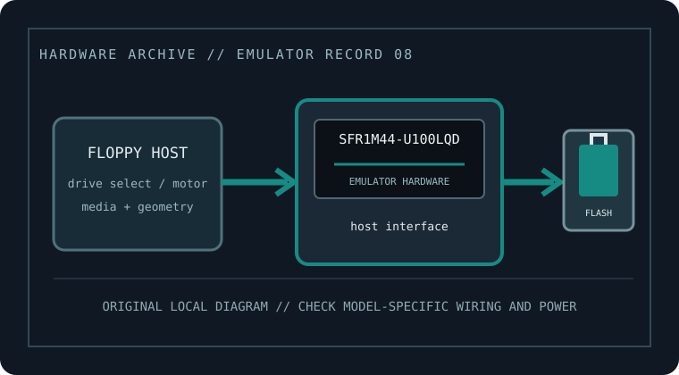

[ FLOPPY EMULATORS // IDENTIFIED HARDWARE ]
Gotek SFR1M44-U100LQD OLED USB Floppy Emulator
A model-specific record for physical floppy-drive emulation hardware. It distinguishes host-side floppy signaling from USB/flash image storage; model suffix, harness, and firmware matter for fit.

MODEL IDENTIFICATION: SFR1M44-U100LQD — Gotek SFR1M44-U100LQD OLED USB Floppy Emulator. Compatibility depends on the exact host, connector, signals, firmware, and image preparation; a matching nominal capacity alone is not enough.
Recorded specifications
| Cataloged part / SKU | Gotek SFR1M44-U100LQD OLED USB Floppy Emulator |
|---|---|
| Manufacturer | Gotek |
| Product family | 3.5-inch, 1.44 MB emulator with OLED display and rotary encoder |
| Drive bay / physical fit | 3.5-inch drive bay class; account for display/encoder front-panel clearance. |
| Host interface | 34-pin floppy host interface on standard configuration; confirm exact board pin 1, jumper, and host-select wiring against its manual. |
| Supported floppy formats | Nominal 1.44 MB HD sector geometry; manufacturer manual/firmware specifies accepted file formats and slot scheme. Compatibility firmware may add HFE, ADF, ST, DSK, and other formats, but this is not assumed for factory firmware. |
| Image / storage handling | USB flash drive; OLED/rotary controls select images/slots under the installed firmware. Keep image files and configuration backed up before firmware changes. |
| Disk-select / drive wiring | Set the drive-select shunt for the host’s DS0/DS1 convention. Confirm motor, ready/disk-change behavior, pin 1, and cable twist before fitting. |
| Power | Supply from the rated floppy power input, normally the host 5 V floppy rail; verify the board label/manual and polarity, especially if adapting a harness. |
| Host compatibility | Hosts needing a matching 34-pin 1.44 MB floppy protocol; display/encoder is a local UI, not a host-side compatibility bridge. |
Compatibility, installation & caveats
Before installation, compare the emulator’s exact revision and harness against the host service documentation. Confirm connector keying and pin one, power voltage and polarity, drive-select state, motor/disk-change signals, expected density, and image geometry. Preserve a read-only copy of original disks and configuration files before experimenting.
- Display-equipped SKU is not interchangeable by appearance alone with U100K or older units. Verify board revision and factory firmware before assuming image features or jumper positions.
- Firmware changes can alter accepted image types, read/write behavior, and host timing. Record the installed firmware and test only with copies before relying on it.
- These devices emulate sector-level floppy behavior, not a magnetic medium. For preservation of nonstandard tracks, copy protection, or forensic evidence, use a flux-capable capture workflow and retain its raw captures.
Sources & further reading
- Gotek — SFR1M44-U100LQD product listingManufacturer listing identifying the specific model and its intended class/application.
- Gotek — U100 family manual (confirm OLED/encoder revision)Manufacturer family guidance; confirm the exact model variant, harness, media preparation, wiring, and power before installation.
- Gotek — manuals and setup downloadsManufacturer download index for choosing the exact emulator variant and its supported USB workflow.
Manufacturer statements are not a guarantee for every machine revision. Check the actual device label, harness, host service manual, and firmware before connecting.